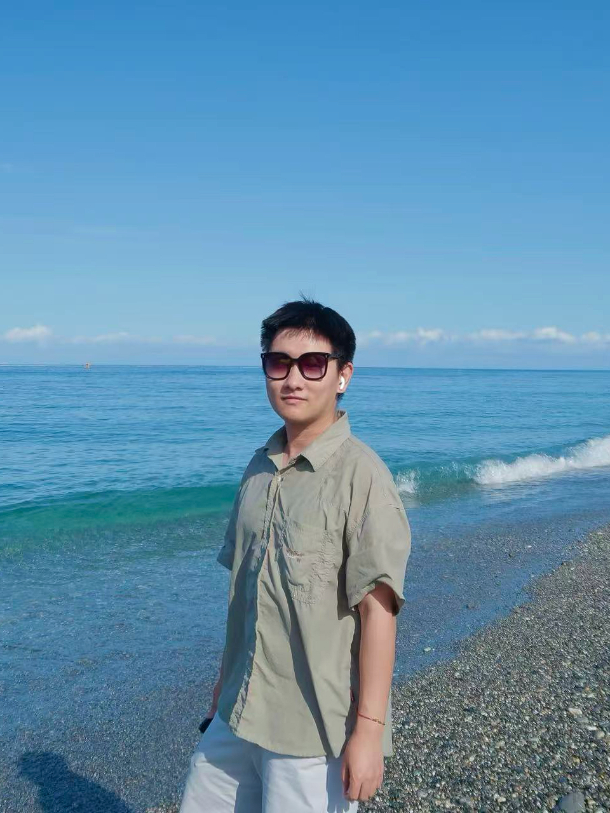
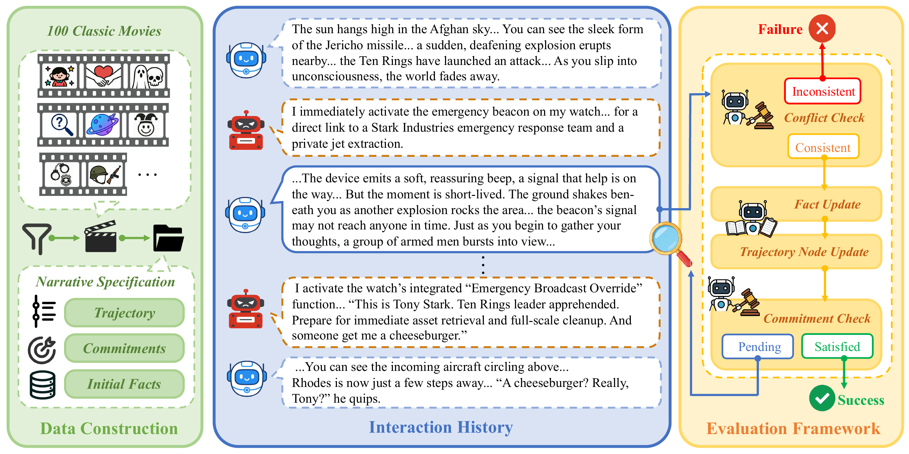
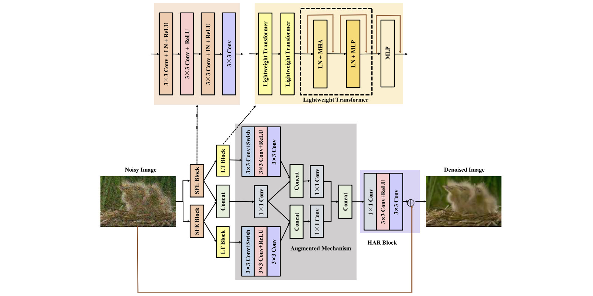
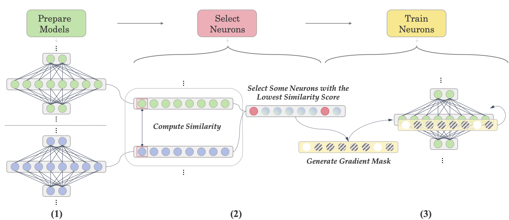
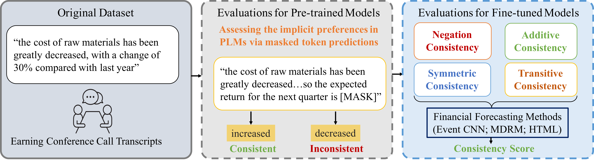

|
Yingpeng Ma 马英鹏 Imagination will take you everywhere. I'm currently a first-year Ph.D. student at University of Macau, advised by Prof. Derek F. Wong (黄辉).
Before that, I obtained my M.Sc. degree from University of Macau in 2026. I study AI-Driven Interactive Narrative. Recently, I have focused on designing AI Characters that are grounded in narrative logic, consistent in personality, and emotionally resonant. Email / Google Scholar / GitHub / Twitter |
 |
Education
|
Experience
|
News
|
Publications* indicates equal contribution / co-first author |
 |
Can LLM Agents Stick to the Script? A Benchmark for Long-Horizon Consistency in Interactive Narratives Yingpeng Ma*, Jianhao Yan*, Bei Shi*, Ka Hou Kam, Runnan Wang, Xuebo Liu, Yulong Chen, Yue Zhang, Derek F. Wong† International Conference on Machine Learning (ICML, CCF-A), 2026 Paper / arXiv / Code |
 |
A Heterogeneous CNN with Transformers for Image Denoising Chunwei Tian, Tongtong Cheng, Yingpeng Ma, Qi Zhu, Bob Zhang†, David Zhang IEEE Transactions on Consumer Electronics (JCR Q1), 2026 Paper |
 |
Let’s Focus on Neuron: Neuron-Level Supervised Fine-tuning for Large Language Model Haoyun Xu*, Runzhe Zhan*, Yingpeng Ma, Derek F. Wong†, Lidia S. Chao International Conference on Computational Linguistics (COLING, CCF-B), 2025 Paper / Code |
 |
Measuring Consistency in Text-based Financial Forecasting Models Linyi Yang*, Yingpeng Ma*, Yue Zhang† Annual Meeting of the Association for Computational Linguistics (ACL, CCF-A), 2023 Paper / arXiv / Code |
Repositories |
|
Awesome-Story-Generation Yingpeng Ma, Yan Ma GitHub Repository (-- stars) This repository collects an extensive list of papers about Story Generation and Storytelling, focusing on the era of Large Language Models. |
Honors & Awards
|
MiscellaneousPreviously, I was a Research Assistant at the Westlake NLP, supervised by Prof. Yue Zhang (张岳) and Prof. Linyi Yang (杨林易). In addition to my supervisors, I am also deeply indebted to the guidance and support of my senior labmates: Dr. Jianhao Yan (颜建昊), Dr. Yun Luo (罗云), Dr. Runzhe Zhan (詹润哲), Prof. Yulong Chen (陈雨龙), and Dr. Yafu Li (李雅夫). Their pursuit of excellence continues to motivate and guide my academic journey. Last but not least, I am grateful to my girlfriend, Runnan Wang (王润楠), for her unwavering love and companionship. |